Beli Redesign

Overview
Background
Beli is a Gen Z-favorite social food app with over 75 million reviews across 30,000 cities. It's built around trusted, friend-driven recommendations: your friends rate restaurants, and you discover places through their taste. It's fun, gamified, and genuinely good at what it does, with 80% of its users under 35.
Eating out is how people date, celebrate, catch up, and build relationships. But for anyone managing a food allergy, intolerance, or culturally rooted diet, that same social ritual can become genuinely stressful. This is a problem I'm personally connected to. Three out of four members of my team are vegetarian for cultural reasons, and I have close friends and family who manage allergies, intolerances, and other dietary needs.
Our Problem
52% of diners with dietary restrictions struggle to find food they can eat when dining out. Beli asks users about their dietary needs during onboarding, then does nothing with that information. There's no way to filter by allergen, no dietary tags on restaurants, and no way to find reviewers who share your restrictions.
The result? People are scanning menus under the table, quietly Googling cross-contamination policies, or skipping the group dinner entirely to avoid being "that person." And the stakes are real:
- 22+ million Americans have a food allergy; tens of millions more follow vegetarian, vegan, gluten-free, halal, or other restricted diets
- Food restrictions increase reported loneliness by 19% by limiting people's ability to bond through shared meals
- 74% of diners use social media to decide where to eat, yet the people who need personalized recommendations most are the least served by existing platforms
Our Solution Brief
We set out to extend Beli with features that center dietary needs rather than treating them as edge cases, so people with restrictions can participate in the same social discovery experience as everyone else, without needing a separate clinical "allergy app."
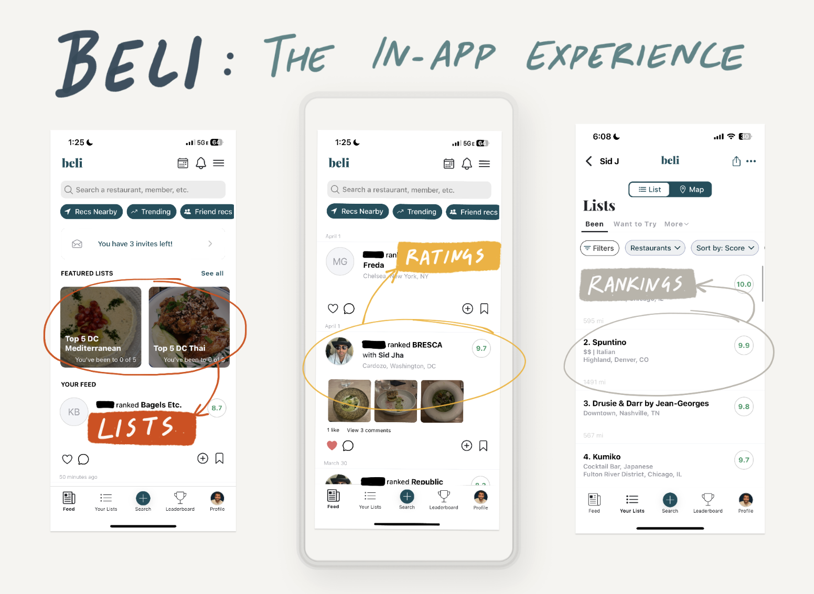
User Research
We conducted semi-structured interviews with three participants who each navigate different dietary restrictions. We gave each person the same core task: open Beli and find a new restaurant in San Diego for a group dinner tonight that fits your dietary needs. We watched them think out loud as they worked through it.
Sahana — vegetarian, severe nut allergy (carries an EpiPen)
- Cross-contamination is a safety issue, not a preference, but she regularly eats before/after group dinners to avoid inconveniencing people
- Had to leave Beli entirely to check the restaurant's website, which still had no nut-free labeling
- Wanted an allergen-specific review section from people who share her restrictions: "Someone else is scared for their well-being the same way you are, like you're going to trust them."
Maya — gluten intolerant, dairy intolerant, allergic to walnuts
- Describes dining out as "a whole chore" and has been eating out less because of it
- Skipped Beli entirely and went to Google to find options
- Beli's onboarding asked about dietary restrictions but locked the feature behind a referral wall, making it feel worse than apps that never promised dietary support at all
Aya — follows a halal diet
- Juggles Google Maps, restaurant websites, Instagram, and a halal verification app just to confirm a single restaurant
- Defaults to ordering vegetarian even when she'd rather eat meat
- Wanted one app that combined halal verification with general restaurant discovery
The Pattern Across All Three
Every single participant followed the same broken loop:
- Discover a restaurant on one platform
- Leave to verify dietary info on another platform
- Come back (maybe)
- Repeat
Trust didn't come from any app, it came from other people who shared their restrictions, from restaurant self-identification, and from clearly labeled menus. Beli's social infrastructure is genuinely strong, but it's currently doing nothing to channel that social trust toward dietary needs.
User Flows
Before fixating on a particular solution, our group met up to discuss the most pertinent insights we’d gathered from our user research, and try and brainstorm solutions. We came up with multiple solutions all geared toward the same goal: improving the restaurant and influencer discovery process specifically for users with dietary restrictions. We decided that refinements had to begin at the onboarding stage for any solution we came up with, since we felt the current options available to choose restrictions were too limited. Our ideas began orienting toward two separate streams — refining how users discover other people that match their restrictions, which improves the social discoverability aspect of the app, and improving how restaurant information is crowdsourced and given to users, so they are able to choose where they want to eat better. We mapped out 2 user flows to see what kind of screens we wanted to create.
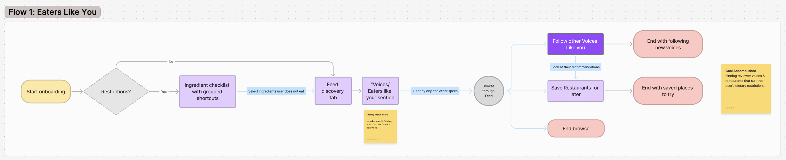
Beli already shows "match scores" between users, but they're based on general restaurant ratings, not dietary compatibility. A vegan and someone with a nut allergy might both love the same restaurant for completely different reasons, making them a poor match in practice.
We proposed ingredient-level dietary restriction input during onboarding, feeding into a new "Eaters Like You" tab. Users can browse a city-based dashboard of people with high dietary match scores and see restaurants recently reviewed by their closest matches.
This doesn't replace Beli's friend-based social layer, it fills the gap for users whose friends don't share their restrictions. Our interviewees consistently said they trust recommendations most from people who face the same limitations they do, because those reviewers actually understand what's at stake.
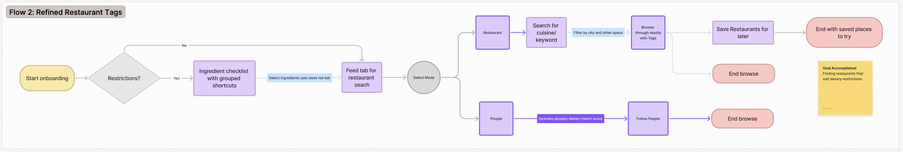
Our redesign touches three main areas:
- Onboarding — expanded to capture ingredient-level dietary preferences upfront, with shortcuts for common restrictions so users don't have to clarify their needs repeatedly throughout the app.
- Discovery feed — a new tab where users can activate a dietary restriction mode that filters restaurants and surfaces compatibility through clear icons and tags. Users can save restaurants directly from the feed for future reference.
- Social layer — users can view dietary match scores and follow people with similar restrictions to get recommendations they can actually trust.
The goal is to reduce the decision fatigue our interviewees described by combining personalized filtering, clear visual cues, and community-driven recommendations, all in one place.
Reflection: We decided to go with flow 1 to refine our vision of the "match score" and "Eaters Like You" page.
User Sketches
We spent some time choosing screens for the features, and then decided to round our ideation out with a Crazy 8 session to help us visualize our screens for the flows better. After doing our own user sketches with Crazy 8's, we decided on our finalized user sketches for our first high-fi prototypes. We focused on recreating the onboarding page, profile, feed, and adding a new Eaters Like You page.
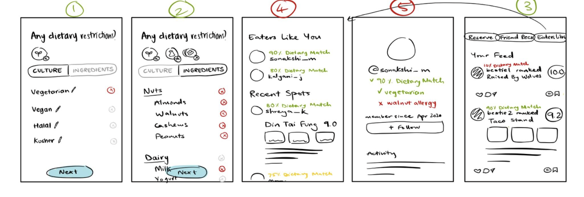
A/B Testing
Our team attempted to make two different versions of the pages we wanted to redesign in Beli.
Version 1
Onboarding
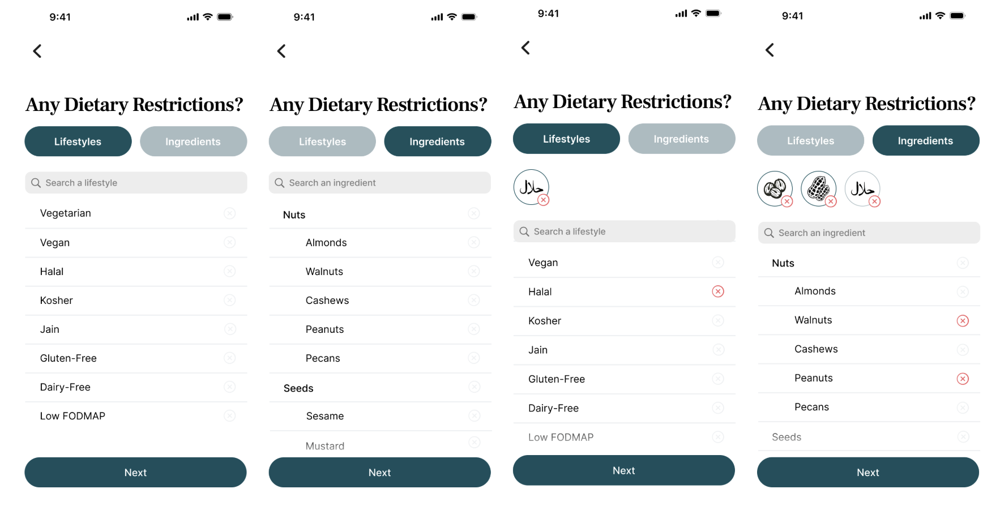
Feed
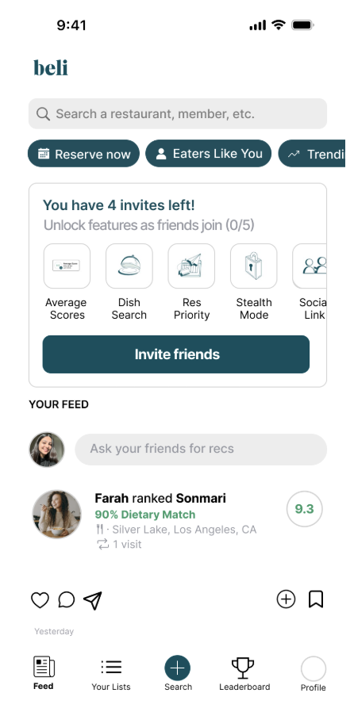
Eaters Like You & Profile
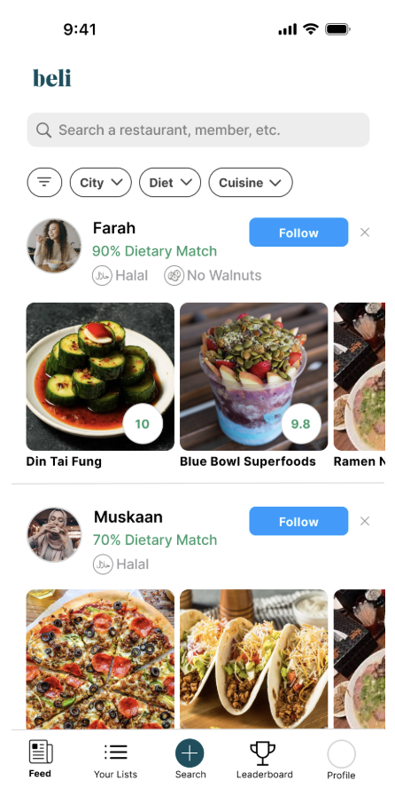
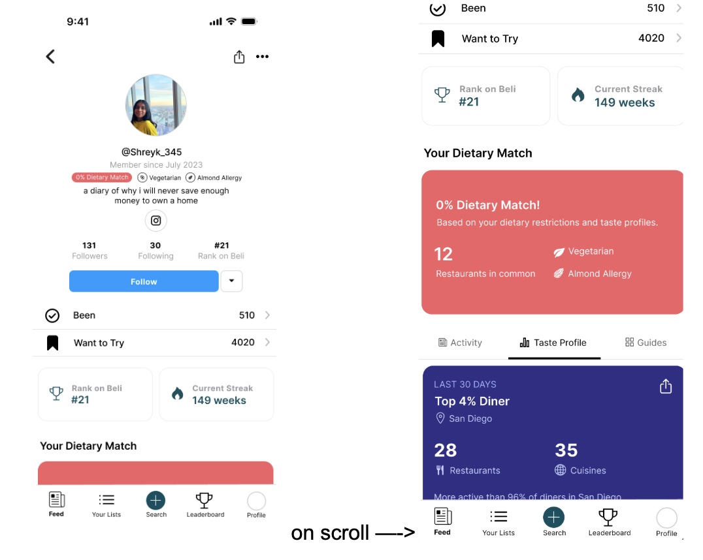
Notes:
- Onboarding is more inclusive with the different categories and visual with the selectable list on top.
- The feed, profile, and Eaters Like You page have a personalized dietary restriction score.
- Eaters Like You is a new page that allows users to discover new food influencers based on their restrictions
Version 2
Onboarding
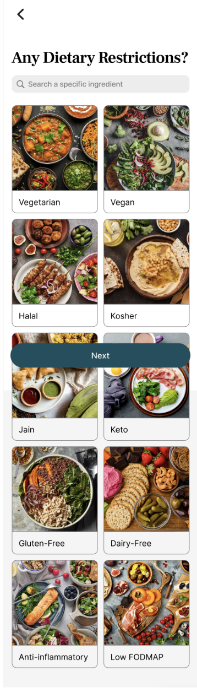
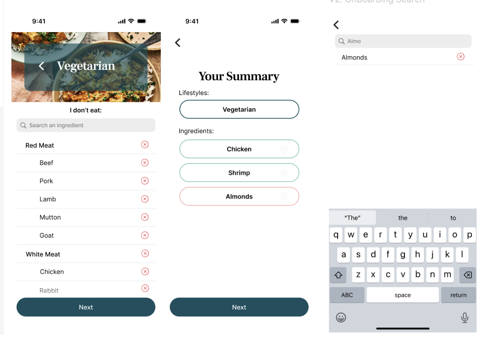
Eaters Like You
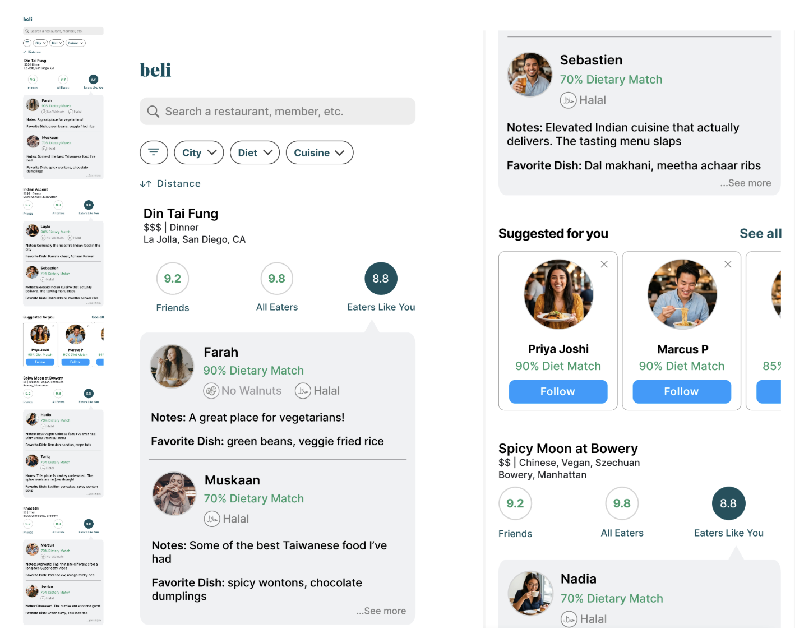
Notes:
- Onboarding is more aesthetically pleasing with the colors and we added a dietary summary at the end
- Eaters Like You focuses on discovering new restaurants now and we added reviews based on our initial user feedback
- Profile and Feed would stay the same
A/B Testing Results
We went back to our initial interviewees and tested which version they liked better. Here are the results:
Key findings:
- V1 onboarding was preferred for its minimal, easy-to-scan list format
- V2 Eaters Like You was preferred because it centered restaurant discovery with reviews from similar dietary users, rather than just connecting with strangers
- Accessibility issues came up across both versions: low-contrast buttons, red/green color coding that doesn't work for colorblind users, and missing text labels on icon selections
POV / Decision: We'll combine the best of both: V1 onboarding (clean, fast, minimal) paired with V2 Eaters Like You (restaurant-first, review-focused, discoverable). The core priority is helping users find restaurants they can actually eat at.
Next steps:
- Fix accessibility issues with color and labels
- Add a subheading clarifying what "lifestyles" means in onboarding
- Emphasize reviewer counts to build trust
- Keep restaurant discovery (not stranger-following) as the primary focus
Final Redesign
Onboarding
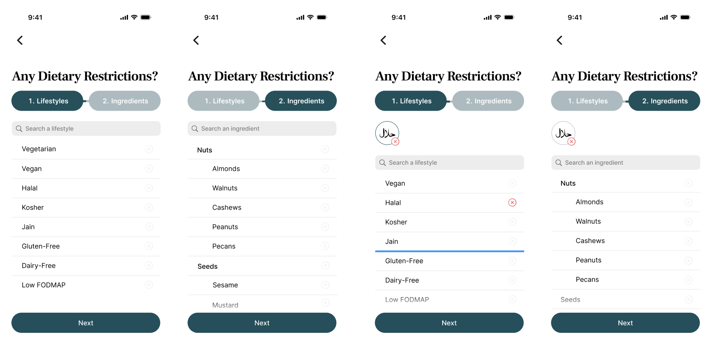
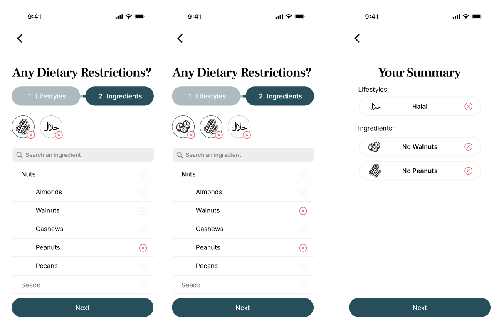
Feed
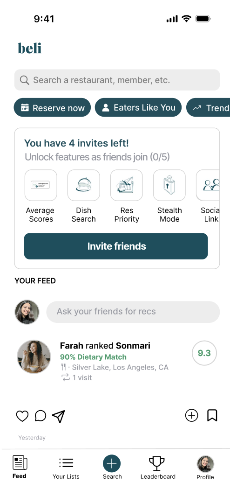
Profile
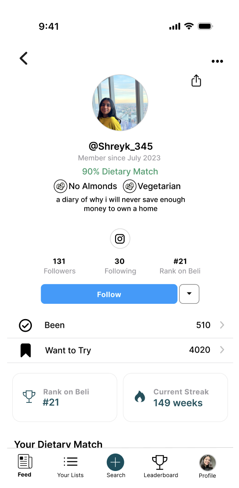
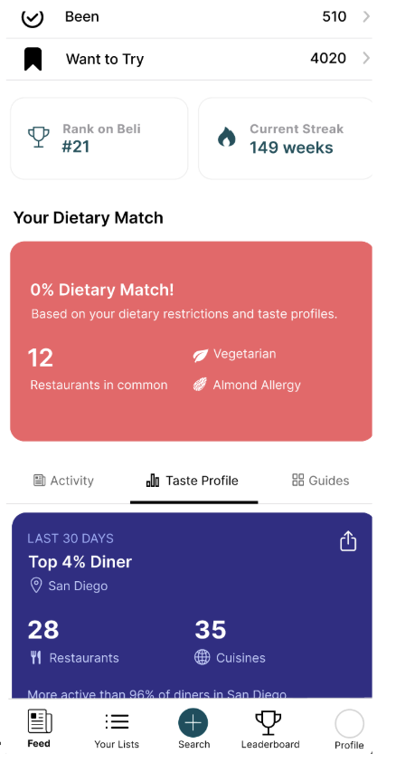
Eaters Like You
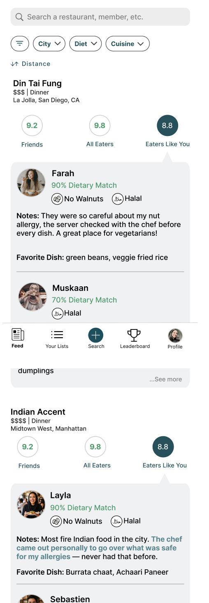
Before and After
Onboarding
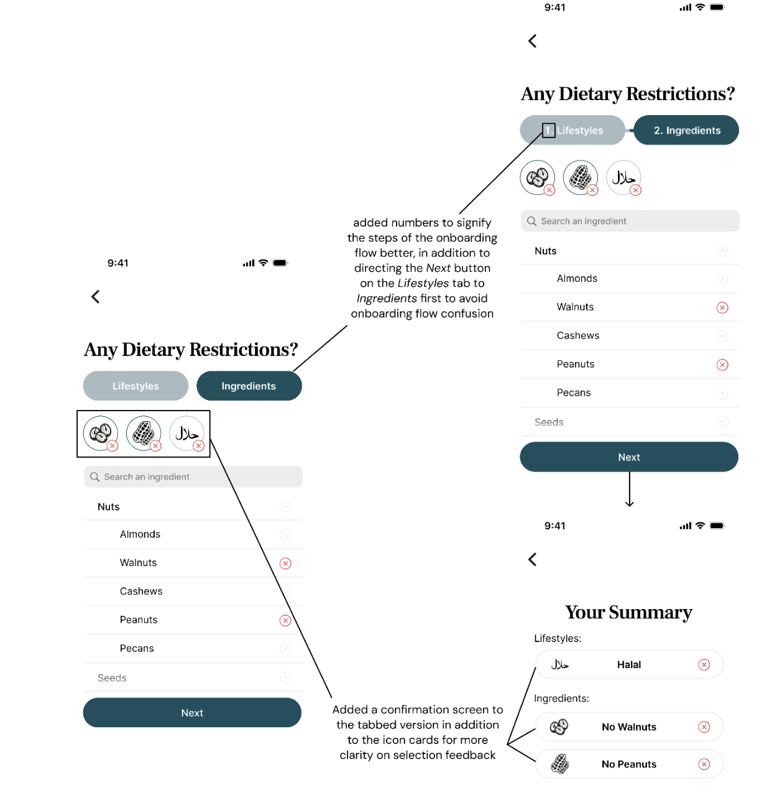
Since our tests revealed that users preferred a simple checklist onboarding process, we updated our flow to better fit this process — rather than using simply a toggle to input both lifestyle and ingredient restrictions, we adapted it into a process that takes users through both, ensuring that they do not accidentally miss inputting important information. Based on feedback, we also added a confirmation screen that displays selected restrictions using both icons and written labels, making profiles easier to review and reducing ambiguity.
Eaters Like You
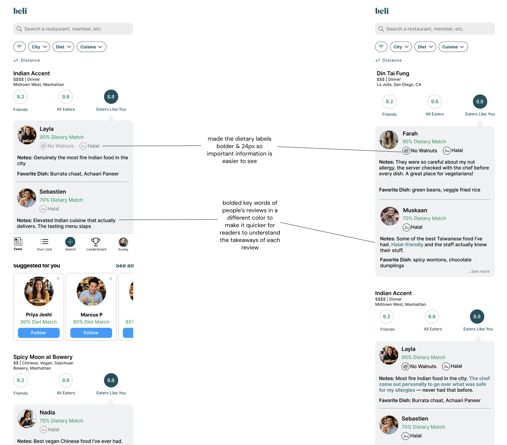
Our user tests revealed that participants preferred the flow that allowed them to read other users' reviews before choosing a restaurant. This aligned with the mental models we uncovered during our initial interviews: all three participants with strict dietary restrictions reported that they trusted reviews from people with the same dietary restrictions more than reviews from anyone else.
From our interviews, we learned that users rely on the following information when making a decision:
- What dietary restrictions does the reviewer have?
- Does the review provide information that helps determine whether the restaurant handles cross-contamination safely?
The difference between our before and after designs reflects our effort to make these two pieces of information more visible and accessible, allowing users to make decisions and feel confident in those decisions more quickly.
Reflection
This project was genuinely one of my favorites. Working through a full design cycle with my team gave me a real sense of what a longer, more iterative process looks like in practice. The biggest takeaway for me was how much inclusivity matters on a social app like Beli. Knowing that our interviewees felt more seen by our redesign made the work feel meaningful beyond just the deliverable.
I also got a lot out of the A/B testing approach. Seeing users respond differently to two versions of the same flow made it clear how much small design decisions can shift the experience for people with specific dietary needs.
If we had more time, I would've loved to extend the inclusive redesign beyond onboarding and Eaters Like You. Features like the Leaderboard have a lot of potential for connecting users with food influencers who share their restrictions, and that felt like an area we barely scratched the surface on.
Overall I'm proud of what our team built and the thoughtfulness we brought to a problem that often gets overlooked in app design.